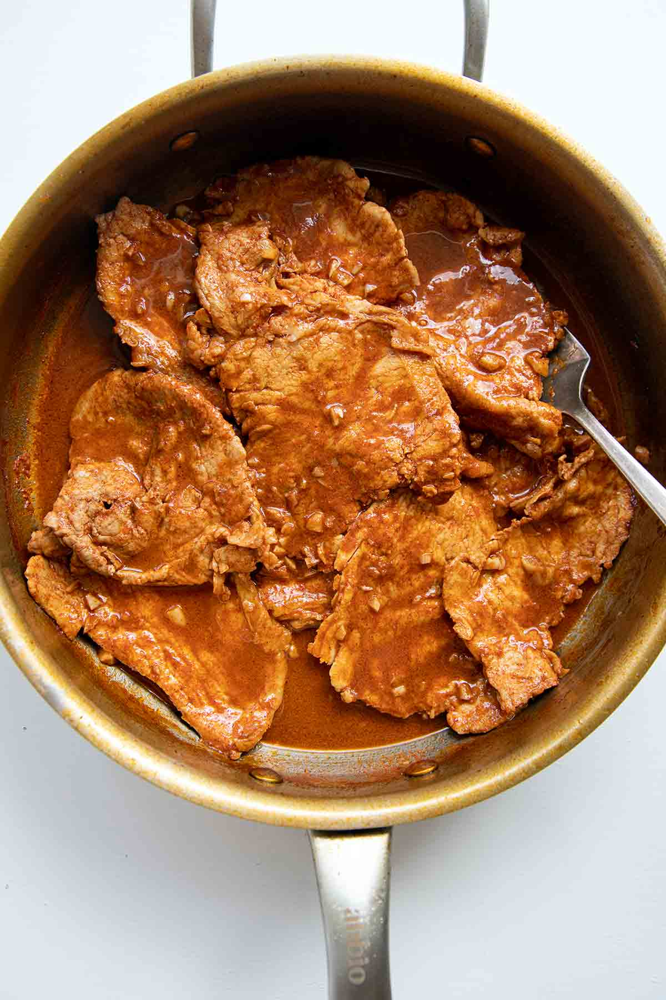

Bifana
Home

Description
A delicious recipe of Portuguese marinated pork loin chops. Often served in bread but can be enjoyed on their own
Ingredients
- 1/2 pounds thinly sliced pork top round, or cutlets, or thin-sliced boneless pork chops, trimmed of fat
- 1 & 1/2 cups white wine
- 6 garlic cloves, chopped
- 2 bay leaves, broken in half
- 1 tablespoon white wine vinegar
- 1 tablespoon sweet paprika
- 2 teaspoons Diamond kosher salt, (or 1 1/4 teaspoon Morton kosher salt)
- 3 tablespoons lard
- Papo secos or crusty rolls, to serve
- piri-piri sauce, for serving (optional)
- mustard
- Slip a slice of top round, a pork cutlet, or pork chop into a zip-top bag or between two pieces of plastic wrap and pound it with a meat tenderizer or rolling pin until it's very thin but not torn. Ideally, you want it to be the thickness of deli meat, less than 1/8 of an inch (3mm) thick. Repeat with the rest of the pork
- In a small bowl, stir together the 1 1/2 cups white wine, 6 garlic cloves, 2 bay leaves, 1 tablespoon white wine vinegar, 1 tablespoon sweet paprika, and 2 teaspoons Diamond kosher salt
- Add the pork slices to a shallow pan and pour the marinade over top. Stir the pork in the liquid, making sure the slices are pretty much submerged. Refrigerate the pan for 1 to 1 1/2 hours, stirring the meat several times
- Heat a large skillet over medium-high heat until very hot and add the 3 tablespoons lard. Fry the bifanas quickly until cooked through, about 1 minute per side. Add more lard if the pan threatens to dry out. Transfer the cooked bifanas to a plate
- Discard the bay leaves and pour the reserved marinade into the skillet and scrape up any stuck-on bits. Let the mixture boil until reduced by about 1/3, 4 to 6 minutes
- Add the bifanas back to the skillet, reduce the heat to low, and simmer to warm them through
- Slice the Papo secos or crusty rolls in half. Spoon some of the sauce over each half, pile with the pork, and, if desired, serve with the mustard and piri-piri sauce
Home